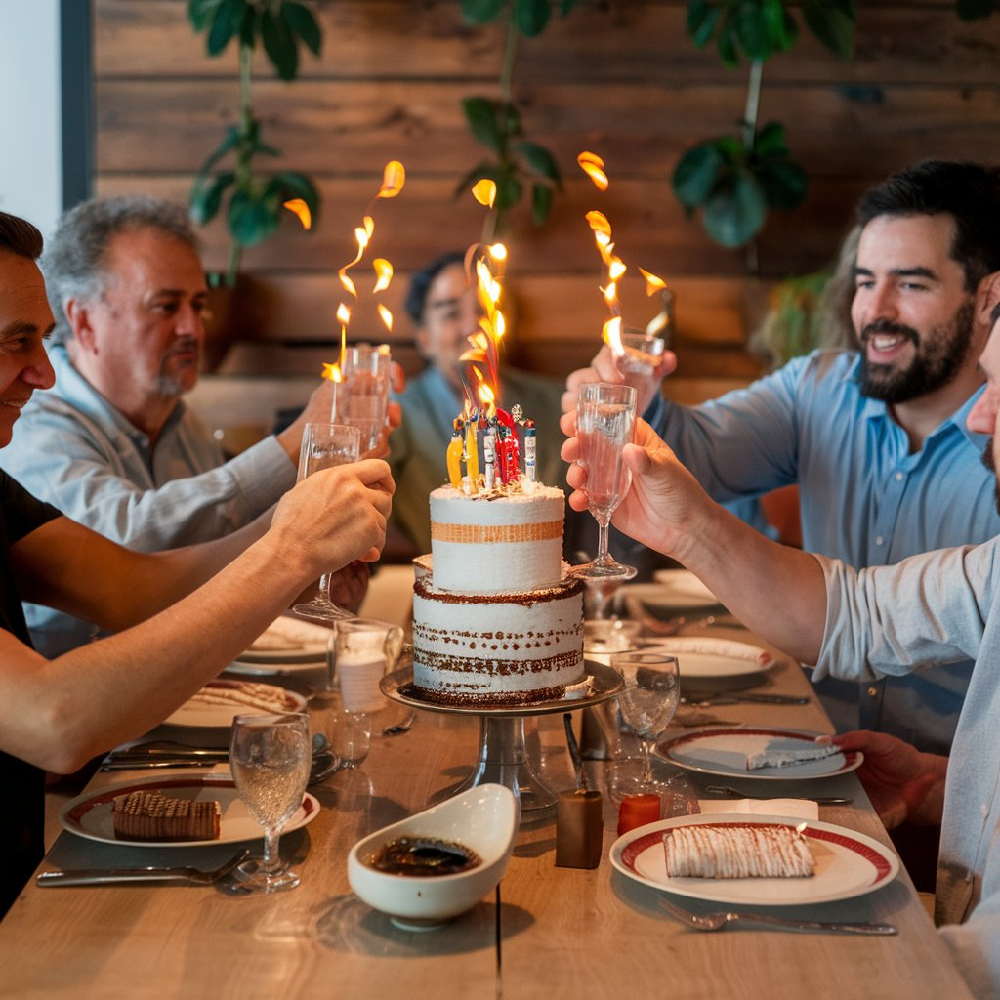
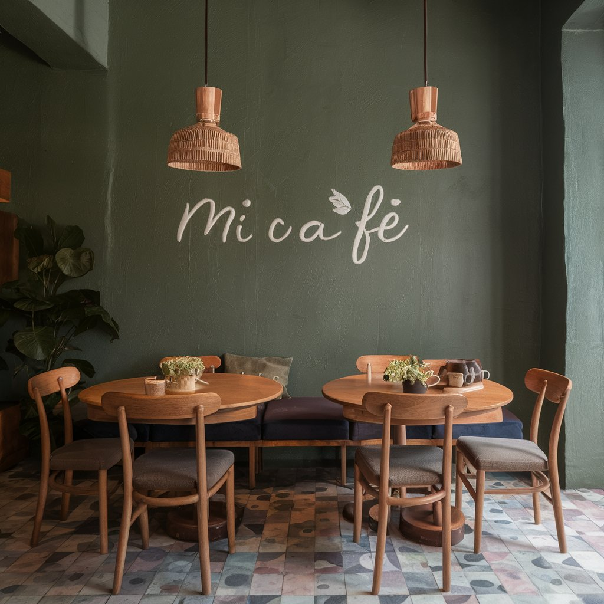
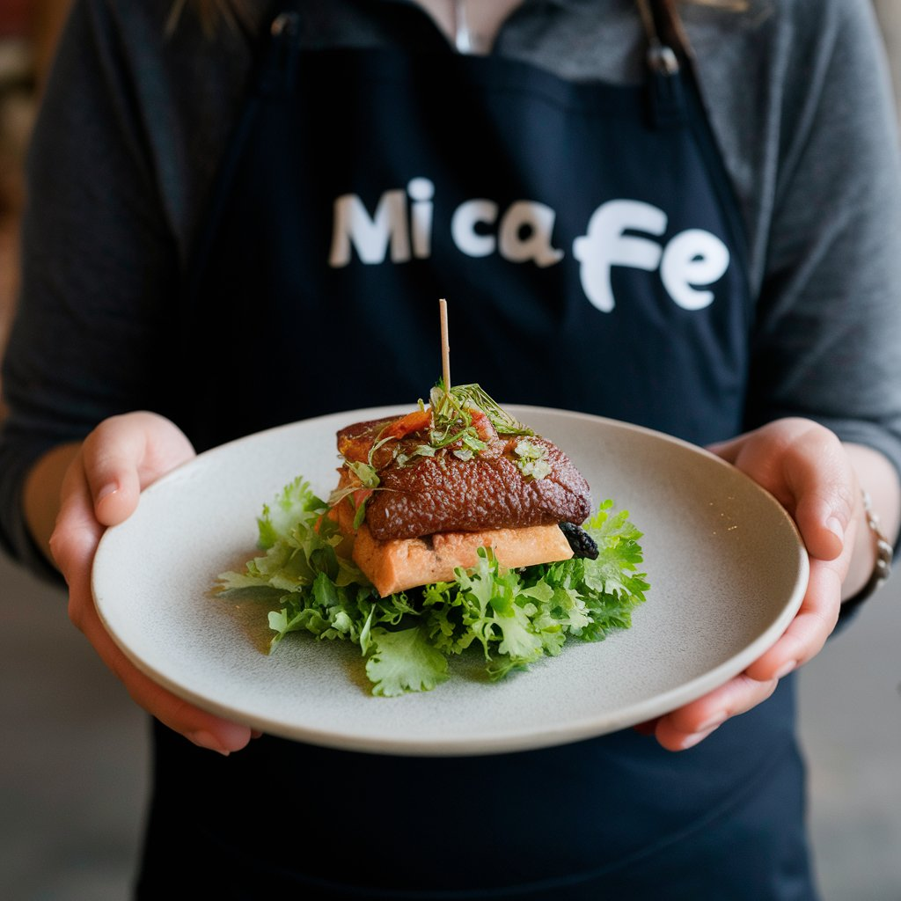

Reservas para Eventos
Hacer una reserva para tu evento en nuestra cafetería de especialidad garantiza una experiencia única y personalizada. Nos especializamos en ofrecer un ambiente acogedor y elegante, perfecto para cualquier tipo de celebración. Al reservar con nosotros, te aseguras un espacio exclusivo con atención dedicada y un menú de alta calidad que destaca nuestros exquisitos cafés de origen y delicias artesanales. Nuestro equipo se encarga de cada detalle, desde la decoración hasta la selección de bebidas y alimentos, para que tú y tus invitados disfruten de un evento memorable sin preocupaciones. ¡Confía en nosotros para transformar tu ocasión especial en un momento inolvidable!
Reserva de Mesas
Reservar una mesa en nuestra cafetería artesanal es una excelente manera de garantizar una experiencia culinaria excepcional en un ambiente cálido y acogedor. Al hacer una reserva, aseguramos que tu mesa esté lista y esperando por ti, sin necesidad de esperar. Nuestro personal se dedica a ofrecer un servicio personalizado, atendiendo cada detalle para que disfrutes de nuestros cafés de origen, pasteles caseros y platos frescos preparados con ingredientes locales. Además, podrás disfrutar de la tranquilidad de saber que tendrás un espacio cómodo y especial para ti y tus acompañantes, haciendo de cada visita un momento especial y relajante.
Servicio de catering
Contratar el servicio de catering de nuestra cafetería artesanal es una garantía de calidad y sabor excepcionales para tus eventos. Nos encargamos de cada detalle, desde la selección de los mejores ingredientes locales hasta la presentación cuidadosa de cada plato. Nuestro menú incluye una variedad de cafés de especialidad, deliciosos bocados artesanales y postres caseros que deleitarán a tus invitados. Además, ofrecemos un servicio personalizado y flexible, adaptándonos a tus necesidades y preferencias para asegurar que tu evento sea todo un éxito. Con nosotros, puedes estar seguro de que cada aspecto de la comida y bebida estará a la altura de tus expectativas.
